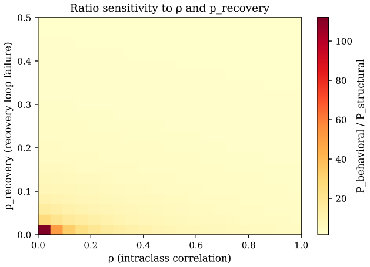

A self-contained Lean 4 development models the protocol's operational semantics as an inductive step relation and proves enforcement invariants by trace induction.
Abstract
AI agents now act as first-class members of the software development lifecycle, but the instruments teams use to direct them enforce nothing: process encoded in prompts is flexible but unenforceable, while workflow formalisms are enforceable but do not model autonomous agents. We propose a domain-specific language for specifying AI-SDLC processes as protocols, with formal abstract syntax, well-formedness conditions, operational semantics, and enforcement invariants, organised around a separation of policy (declared intent) from mechanism (structural enforcement). We prove that any well-formed protocol maintains its invariants on every execution trace, closed under Kleene composition of orchestration loops: protocol steps cannot be skipped, by construction. A failure-rate analysis derives two consequences: structural enforcement bounds silent failure while converting the remainder into visible, audited stalls, and the benefit carries a capability floor. We validate the design in simulation and end-to-end on SWE-bench Verified, where an identical bug-fix methodology yields no improvement delivered as prose instructions, but a significant, replicated 14-22 point gain when executed as a validated, self-correcting process; an ablation attributes the gain to the executed process itself, and the capability floor appears where the model predicts it. As foundation models converge, the durable engineering asset is the formally specified, executable process.
Problem
AI agents in software development are directed through prompts, which cannot be enforced, or through workflow formalisms, which do not model autonomous agents. No specification language exists for expressing human-agent responsibility boundaries, approval gates, and governance constraints as executable protocols.
Approach
The authors define a domain-specific protocol language with abstract syntax, well-formedness conditions, operational semantics, and enforcement invariants (INV1–INV5), separating policy from mechanism. They prove that well-formed protocols maintain their invariants on every trace, closed under Kleene composition. Part of the argument is mechanised in Lean 4 without external libraries: the seven rules are modelled as an inductive step relation, and INV2, INV3 and a corollary are proved by trace induction. A reference implementation using MCP servers, validation tokens, and an event-sourced audit log is evaluated in simulation and on SWE-bench Verified.
Results
Monte Carlo simulation characterises the trade-offs between disagreement policies and exposed an implementation defect. On SWE-bench Verified, the same bug-fix methodology gave no gain when delivered as prose instructions but a replicated 14–22 point gain when run as an enforced, self-correcting process, with a capability floor appearing where the model predicts.

Figure 6. Sensitivity of the P_{\text{behavioural}}/P_{\text{structural}} ratio to validator correlation \rho and recovery-loop failure p_{\text{recovery}} . The ratio exceeds unity across the entire plane and is largest when validators are near-independent and recovery is reliable.